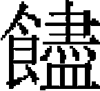

食貨志五［一］
酒醋課 茶課 市舶課
酒醋課。太宗三年，立酒醋局坊場官，榷酤辦課，仍以州府縣司長吏充提點官，隸徵收課税所，其課税驗户口多寡定之。六年，頒酒麯醋貨條禁，私造者依條治罪。
至元十年，御史臺言：「酒户見納課程，每石賣鈔四兩，内納官課鈔一兩。葡萄酒每一千斤賣鈔一百兩，内納官課鈔六兩。此係榷貨，難同商税。葡萄酒合依酒户一體納課。」户部議：「葡萄酒不用米麯，與釀造不同，仍依舊例，三十分取一。」
至元十五年，禁私酒，造酒者笞七十七，財産斷没，飲者笞一十七。
二十年，申嚴酒禁，有私造者財産、女子没官，犯人配役。二十二年，聽農民造醋自用，免其課税。酒課，除大都、河西務、楊村所管州城，依例官司榷酤外，腹裏、大都、上都、江南、福建、兩廣鄉村地面交百姓自行造酒辦酒，每石輸鈔五兩。先是，盧世榮奏：「大都酒課，日用米千石。以天下之衆，比京師當居三分之二，酒課當日用米二千石。今各路總計日用米三百六十石而已，其奸欺隱盜如此，安可不禁？臣等已責各官增舊課二十倍，有不如數者重治其罪。」世祖方委任世榮，不以爲苛急也。至是，罷榷酤法，聽民自造，增課鈔一貫爲五貫云。
二十九年，阿老瓦丁言：「杭州歲辦二十七萬餘錠，湖廣、龍興歲辦止九萬錠。請減杭州歲課十分之二，交湖廣、龍興、南京三行省分辦。」從之。
大德五年，定犯界賣酒，仍依斷決追罰舊例，十瓶以下罰鈔一十兩，決二十七。十瓶以上，罰鈔四十兩，決四十七。酒雖多，止杖六十，罰鈔五十兩。其酒給還原主，仍勒令出境。八年，大都酒課提舉司設糟房一百所。九年，併爲三十所，每所一日所醖，不得過二十五石。十年，增三所。至大三年，又增爲五十四所。
延祐六年，常德路副達魯花赤哈琳言：「竊維聖朝推好生之仁，廣恤刑之意，法貴得中，刑宜從薄。始立榷酤之時，官設酒庫，出備米麯工本，造酒發賣。百姓不得私自醖造，亦猶鹽場支用官本，竈户煎鹽發賣辦課，故犯酒禁者與犯鹽之法同。已後廢榷酤之法，酒醋課程散入民間恢辦，諸人皆得造酒。有地之家，納門攤酒課者，許造酒食用。造酒發賣者，止驗米數赴務投税。其造賣而不税者，是與匿税無異。今官司往往將犯人依例決杖七十，籍没一半財産。若富有之家，安肯吝惜税錢，當此重罪？皆因比年水旱相仍，貧民生計艱難，造酒私賣，以資過活。愚而無知，妄思漏税，事發到官，無論升斗之末，一體科斷。雖有籍没之名，其實貧家小户並無財産。况犯私茶者，止斷没所犯貨物，以此較之，輕重似覺不倫。今後有匿酒税者，如蒙減輕，依匿税例科斷，似用法得中，不失恤刑之美意矣。」部議從之。其歲課之數，惟天曆三年有籍可徵：
酒課：
腹裏：五萬六千二百四十三錠六十七兩。
遼陽：二千二百五十錠十一兩。
河南：七萬五千七十七錠十一兩。
陝西：一萬一千七百七十四錠三十四兩。
四川：七千五百九十錠二十兩。
甘肅：二千七十八錠三十五兩。
雲南： 二十萬一千一百十七錠。
二十萬一千一百十七錠。
江浙：十九萬六千六百五十四錠二十一兩。
江西：五萬八千六百四十錠十六兩。
湖廣：五萬八百四十八錠四十九兩。
醋課：
腹裏：三千五百七十六錠四十八兩。
遼陽：三十四錠二十六兩。
河南：二千七百四十錠三十六兩。
陝西：一千五百七十三錠三十九兩。
四川：六百十六錠十二兩。
江浙：一萬一千八百七十錠十九兩。
江西：九百五十一錠二十四兩。
湖廣：一千二百三十一錠二十七兩。
榷茶：
始於世祖至元五年，用運使白賡言，榷成都茶，於京兆、鞏昌置局發賣。私賣者，其罪與私鹽同。六年，始立西蜀四川監榷茶場使司掌之。
十二年，既平宋，復用左丞吕文焕言，榷江西茶。以宋會子五十貫準中統鈔一貫。十三年，定長引短引之法，以三分取一。長引，每引計茶一百二十斤，收鈔五錢四分二釐八毫。短引，計茶九十斤，收鈔四錢二分八毫。是歲，徵一千二百餘錠。十四年，取三分之半，增至二千三百餘錠。十五年，運使木八剌管辦，長引增收鈔一兩八分五釐六毫，短引增收鈔八錢四分五釐六毫，辦鈔六千六百餘錠。
十七年，用運使盧世榮言，革去長引，止用短引，末茶每引收鈔二兩四錢九分，草茶收鈔二兩二錢四分。又創立門攤食茶課程一千三百六十餘錠，每歲添荅入額。是年，增至一萬九千八百餘錠。十八年，定販茶者賫公據赴茶司繳納，倒給茶引，賫引賣茶。賣畢，限三日内繳引，即時批抹。逾限匿而不繳，杖六十。因而冒用或改抹增添及引不隨茶者，亦同私茶斷。是年，增額至二萬四千錠。十九年，置官局於江南，令販客賣引，通行貨賣。
二十一年，江州榷茶都轉運使廉恂言：「本司至二十年，茶課年終辦到二萬八千錠。若於本司每年納賣三十五萬引上，每草茶一引，元價二兩二錢四分，添鈔一兩九分，每引作三兩三分，末茶二兩四錢九分，添鈔一兩一分，每引作三兩五錢，周歲約辦鈔二萬四千錠。加販茶客四千錠，計二萬八千錠，已過盧運使數目，卻將食茶課程革去，如此恢辦，庶免百姓食茶攪擾之害，課亦不虧。」中書省議從之。二十二年，令襄陽、真州、廬州、淮安州、陽邏渡等處關防，勿令江南茶貨渡江，候腹裏路分將無引茶貨賣絶，再放行。二十三年，又以李起南言，每引增至鈔五貫。是年，徵至四萬餘錠。二十四年，申嚴私茶之禁。
二十五年，尚書省奏頒榷茶條畫：
一，茶課：依茶引内條畫施行。
一，綱船：官司不得拘撮。
一，舊引依限赴官司繳納，每季申報尚書省照勘。
一，官吏軍民諸色頭目人等，無得虚樁煽惑，沮壞見辦課程。
一，茶園不得縱頭匹損壞。
一，除職官外，其餘運司合差人員，選有行止、有家業者充之。
一，差官巡綽，出給差劄者，不得夾帶私茶。
一，依舊例，管民正官充提點官。
一，元認課額及額外增羨，須盡實到官，如有虧負，勒令賠償，更行治罪。
一，蒙古萬户、千户頭目人等，無得非理婪索榷茶司酒食撒花等物。
是年，改立江西都督轉運司。二十六年，阿里渾薩里、葉李等增引税爲十貫。三十年，又改江南茶法，凡管茶提舉司十六所，罷其課少者五。先是，茶引之外，又有茶由，以給零賣者，每由茶九斤，收鈔一兩。至是，自二斤至三十斤，分爲十等焉。
元貞元年，有獻利者言：「舊法，江南茶商至江北者，又税之。其在江南賣者，亦宜更税如江北之例。」中書户部議增江南課三千錠，不更税。是年，額至八萬三百錠。至大四年，增額至十七萬一千一百三十一錠。皇慶二年，更定江南茶法，又增至十九萬二千八百六十餘錠。
延祐五年，前江南茶運副法忽魯丁言：「所辦茶課，以二十萬錠爲額。每引一道，舊例官錢十兩，今通作中統鈔十五兩。批驗每引，舊例官錢一錢，今通增作中統錢一錢五分。茶由每引，舊例官錢一錢一分一釐一毫二絲，今通增作中統鈔一錢六分六釐六毫八絲。如此減引添錢，必可增至三十萬錠。」中書户部議：「每歲量發引目一百萬道，每引添中統鈔二兩五錢，通作十二兩五錢，作額恢辦。」敕從之。法忽魯丁又言：「運司止是親榷江、興二路，其餘課鈔，係各處提舉司，並有帶辦，徑赴各行省繳納，宜將運裁罷。」部議恐虧兑課額，不允。七年，又增至二十八萬九千二百十一錠。較至元十三年課額，增二十餘倍焉。天曆二年歲額與延祐同。
後至元二年，江西茶運司同知萬家驢言：「本司歲辦課額二十八萬九千三百餘錠。除門攤批驗鈔外，茶引一百萬張，爲鈔二十五萬錠。木茶自有官卸筒袋閣坊，其零斤草茶由帖，每年印造一千三百八萬五千二百八十九斤。茶引一張，照茶九十斤，客商興販。其小民買食及江南産茶去處零斤採賣，皆須有帖券賣茶由。至於夏秋，茶由已絶，民間闕用。以此考之，茶由數少課輕，便於民用而不敷。每歲合印茶由，以十分爲率，量增二分，計二百六十一萬七千五十八斤。依引目内官茶，每斤收鈔一錢三分八釐八毫八絲，計增七千二百六十九錠七兩，比較減去引目二萬九千七十六張，庶幾引不停閑，茶無私積。」中書省如所議行之。
至正二年，監察御史李宏言：「榷茶之制，古所未有。自唐以來，其法始備。國朝既於江州設立榷茶都轉運司，仍於各路出茶之地設立提舉司七處，專任散據賣引，規辦國課，莫敢誰何。每至十二月初，差人勾集各處提舉司官吏，關領次年據引。及其到司，旬月之間，司官不能偕至，吏貼需求，各滿所欲，方能給付據引。此時春月已過，及還本司，方欲點對給散，又有分司官吏，到各處驗户散據賣引。每引十張，除正納官課一百二十五兩外，又取要中統鈔二十五兩，名爲搭頭事例錢，以爲分司官吏饋

之資。提舉司雖以榷茶爲名，其實不能專散據賣引之任，不過爲運司官吏營辦資財而已。既見分司官吏所爲若是，亦復仿效遷延。及茶户得據還家，已及五六月矣。中間又存留茶引二三千本，以茶户消乏爲名，轉賣與新興之户，每據又多取中統鈔二十五兩，上下分派，各爲己私。不知此等之錢，自何而出？其爲茶户之苦，有不可言。至如得據在手，碾磨方興，吏卒踵門催并初限。不知茶未發賣，何從得錢？間有充裕之家，必須别行措辦。其力薄者，例被拘監，無非典鬻家私，以應官限。及終限，不足備上司緊迸重複勾追，非法苦楚。此皆由運司給引之遲，分司苛取之過，茶户本圖求利，反受其害，日見消乏逃亡，情實堪憫。今若申明舊制，每歲正月須要運司盡將據引給付提舉司，隨時派散，無得停留在庫，多收分例，妨誤造茶時月，如有過期，别行定罪，違者從肅政廉訪司依例糾治，如此庶茶司少革貪黷之風，茶户免損乏之害。」中書省以其言切直，移咨江西行省，委官與茶運司講究，如果便益，依所言行之。世祖定江南，凡江浙、閩、粵濱海之地，與外番互市，以市舶官主之，大抵因宋之舊法。其貨以十分取一，麤者十五分取一。至元十四年，立市舶司於泉州，以福州行省忙古 領之。立市舶司於慶元、上海、澉浦，以安撫使楊發領之。每歲招集舶商貿易，次年回帆，依例抽解，然後聽其貨賣。
領之。立市舶司於慶元、上海、澉浦，以安撫使楊發領之。每歲招集舶商貿易，次年回帆，依例抽解，然後聽其貨賣。
十七年，上海市舶司招船提控王楠上言：「泉、福等路商船，販吉布條鐵等物，其税額不宜與番貨等。」乃定雙抽、單抽之法，番貨雙抽，土貨單抽。十九年，又用中書左丞耿仁言，以鈔易銅錢，令市舶可以錢易海外金珠貨物，仍聽舶户通販抽分。二十年，復定抽分之法。是年，忙古言，舶商皆以金銀易香木。乃下令禁之，惟鐵不禁。
二十三年，市舶司盧世榮請出係官錢萬錠，自具船給本，選賈人至海外貿易諸貨。其所獲之息，以十分爲率，官取其七，賈人得其三。凡權勢之家，不得用己錢爲番賈，犯者罪之，仍籍其家産之半。禁海外貿易者，毋用銅錢。是年，以市舶司隸泉府監，改廣東轉運市舶提舉司爲鹽課市舶司。未幾，復置焉。二十五年，又禁廣州官民，毋得運米至占城諸番。二十六年，沙不丁上市舶司歲獻珠四百斤、金三千四百兩，命 之以待貧乏者。
之以待貧乏者。
二十八年，令市舶驗貨抽分。是年，中書省定抽分之數及漏税法，凡商賈販泉、福等路已抽之物，於本省有市舶司之地賣者，細色於二十五分之中取一，麤色於三十分之中取一，免其納税。其就市舶司買者，止於賣處收税，而不再抽。漏舶貨物，依例斷没。
三十年，中書省臣奏：舊紀：三十年，行大司農司燕公楠、翰林學士承旨留夢炎言：「杭州、上海、澉浦、温州、慶元、廣東、泉州置市舶司，惟泉州物貨三十分抽一，餘皆十五抽一。乞以泉州爲例。」從之。錯誤殊甚，今不取。
訪聞有留狀元稱知市舶事例，又前行大司農司丞李晞顔報到亡宋抽分市舶則例，今會集各處行省官、行泉府司官並留狀元及李晞顔同議，擬整治市舶司條律，奏請施行。
一，定例抽分，麤貨十五分取一分，細貨十分取一分，並依泉州現行體例，從市舶司更於抽訖貨物内，以三十分爲率，抽舶税一分，聽舶商住便貿易。
一，權豪富户入番貿易者，與商賈一例抽分，匿者罪之，錢物斷没，以三分之一與首告人充賞。
一，行省、行泉府司、市舶司諸官吏，交舶商捎帶私錢貿易［二］，匿不抽分者，與上同。
一，市舶内如有進呈貴細貨物，應由行省移咨中書省奏聞，不得影射隱瞞，違者罪之。
一，僧、道、也里可温、荅失蠻人夾帶商賈過番販賣，如無許免抽分明諭，仍依例抽分，違者罪之。
一，舶商所領公憑，明填所往何國，不許越投他處。如因風浪打往他國，就販賣貨物者，至回帆時，取問别無虚誑，依例抽分。
一，每船許帶小船一隻，名曰柴子船。
一，商船遭風，準與消落憑驗，若誑言遭風等事，究問斷没施行。
一，商人不請憑驗者，船物没官，犯人杖一百七十。
一，舶商所攜兵器，依例隨住船處申明寄庫，起舶日給還。
一，舶商所募人等，市舶司申給文憑［三］，五人爲保。
一，商舶回帆，以物籍公驗納市舶司。
一，商舶雖赴市舶司抽分，而貨物有巧爲藏匿者，即係漏籍，没官斷罪。
一，金銀銅鐵及男女口，並不許下海私販。
一，行下衙門不得將商船差占，有妨興販。
一，官吏知情受賂，船客隱税者，依條斷罪。
一，舶商及梢工人等，合行優恤，並與除免雜役。
一，番人將帶舶貨，從本國於公驗空紙内填寫姓名、物件、斤重，至市舶司依例抽分，仍差廉幹正官發賣。將民間必用及不係急用物色，驗分數互相搭配，須通行發賣，限四月事畢。
一，行省、行泉府司、市舶司官須預期至抽解處，以待舶船到岸，依例抽收。
一，市舶司輪派正官於舶船開岸之日，親行檢視，仍取檢視官結罪文狀施行。
三十一年，詔有司勿拘海舶，聽其自便。
元貞元年，以舶商隱漏物貨者多，命就海中逆而閲之。二年，禁海商以細貨於馬八兒、唄喃、梵答剌亦納三番國交易。别出鈔五萬錠，令沙不丁等議規運之法。
大德二年，併澉浦、上海入慶元市舶司。是年，置制用院。七年，以禁商下海，罷之。
延祐元年，禁人下番，官自發船貿易，回帆之日，細物十分抽二，麤物十五分抽二。七年，禁入番將絲銀細物易於外國。
至治二年，復立泉州、慶元、廣東提舉司，申明市舶之禁。三年，聽海商貿易，歸徵其税。
泰定元年，諸海舶至者，止令行省抽分。三年，命有司依累朝呈獻例，給買寶貨者之直，天曆元年，以其耗蠹國用，禁之。
【校勘記】
［一］「食貨」，原作「食貸」，據上下卷目改。
［二］「捎帶」，原作「梢帶」，據文意改。
［三］「市舶司」，「舶」原作「船」，按拜柱《通制條格》云「海商每船募綱首、直庫、雜事、部領、梢工、碇手，各從便，其名呈市舶司，申給文憑，船請火印爲記，人結伍名爲保」，據改。
本章完!